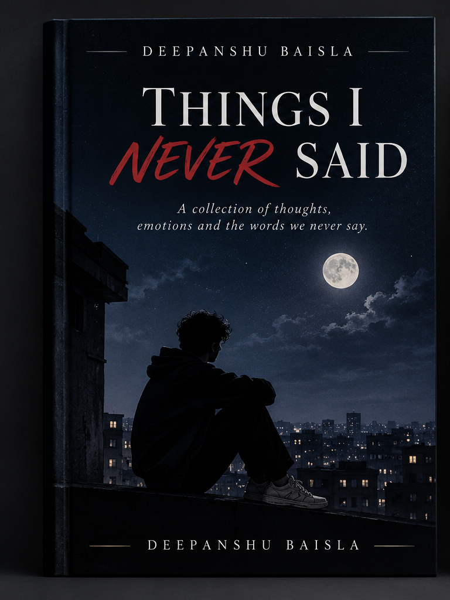
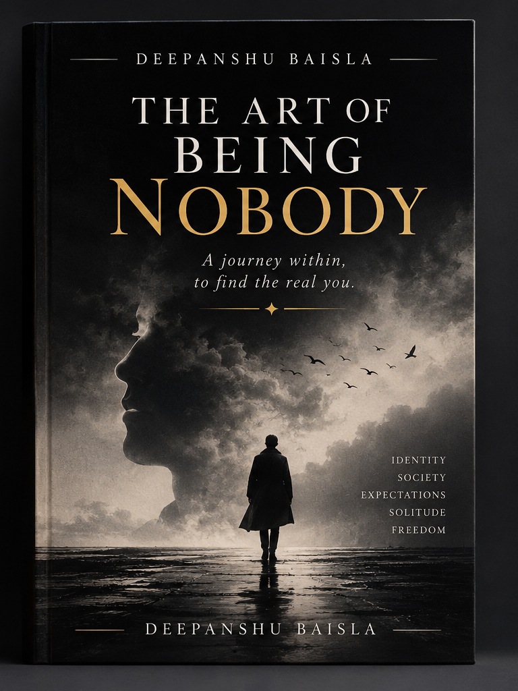

Writing & reflections
Deepanshu
Baisla
Two original short books exploring the words we leave unspoken, the identities we inherit, and the quiet freedom of becoming ourselves.

Two original short books exploring the words we leave unspoken, the identities we inherit, and the quiet freedom of becoming ourselves.

